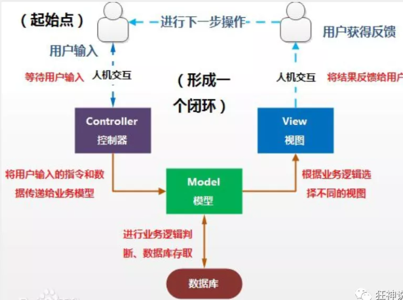
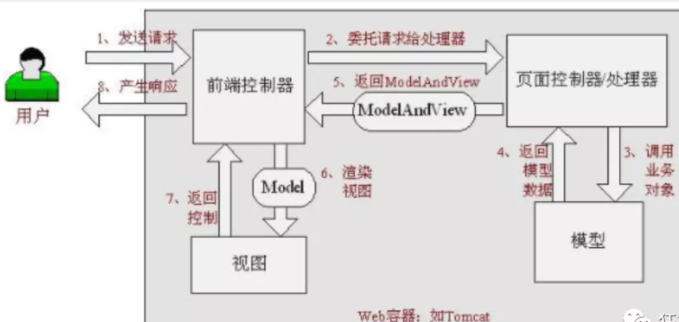
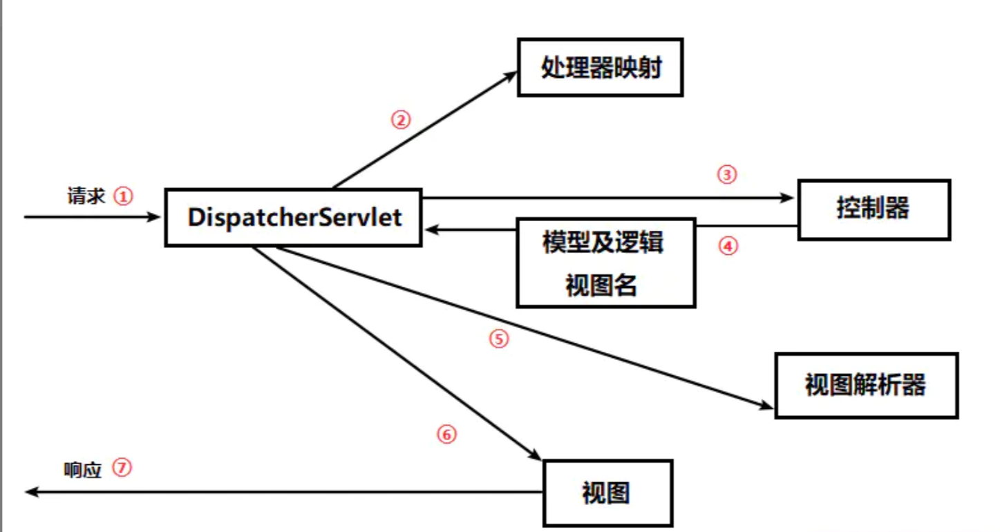

MVC即模型（model）、视图（view）、控制器（controller）
MVC作用：降低视图与业务的双向耦合
- 模型：数据模型，提供要展示的数据，包含数据和行为；Value Object（数据dao层）和服务层（Service）
- 业务逻辑
- 保存数据的状态
- 视图：模型的展示，即用户看到的界面
- 显示页面
- 控制器：接收用户请求，委托给模型进行处理，等待model完成后，将返回的数据返回给视图，控制器就是调度员
- 获取表单数据
- 调用业务逻辑
- 转向指定的页面

SpringMVC的原理如下图所示：
当发起请求时被前置的控制器拦截到请求，根据请求参数生成代理请求，找到请求对应的实际控制器，控制器处理请求，创建数据模型，访问数据库，将模型响应给中心控制器，控制器使用模型与视图渲染视图结果，将结果返回给中心控制器，再将结果返回给请求者。


常规方法
流程
第一站：DispatcherServlet：对应web.xml
从请求离开浏览器以后，第一站到达的就是 DispatcherServlet，看名字这是一个 Servlet，通过 J2EE 的学习，我们知道 Servlet 可以拦截并处理 HTTP 请求，DispatcherServlet 会拦截所有的请求，并且将这些请求发送给 Spring MVC 控制器。DispatcherServlet 的任务就是拦截请求发送给 Spring MVC 控制器。
第二站：处理器映射（HandlerMapping）:对应springmvc-servlet.xml
DispatcherServlet 会查询一个或多个处理器映射来确定请求的下一站在哪里，处理器映射会根据请求所携带的 URL 信息来进行决策，
第三站：控制器:对应springmvc-servlet.xml
一旦选择了合适的控制器， DispatcherServlet 会将请求发送给选中的控制器，将 /hello 地址交给 helloController 处理，到了控制器，请求会卸下其负载（用户提交的请求）等待控制器处理完这些信息
第四站：返回 DispatcherServlet：HelloController.java
当控制器在完成逻辑处理后，通常会产生一些信息，这些信息就是需要返回给用户并在浏览器上显示的信息，它们被称为模型（Model）。仅仅返回原始的信息时不够的——这些信息需要以用户友好的方式进行格式化，一般会是 HTML，所以，信息需要发送给一个视图（view），通常会是 JSP。
控制器所做的最后一件事就是将模型数据打包，并且表示出用于渲染输出的视图名（逻辑视图名）。它接下来会将请求连同模型和视图名发送回 DispatcherServlet。
第五站：视图解析器: HelloController.java/springmvc-servlet.xml
这样以来，控制器就不会和特定的视图相耦合，传递给 DispatcherServlet 的视图名并不直接表示某个特定的 JSP。（实际上，它甚至不能确定视图就是 JSP）相反，它传递的仅仅是一个逻辑名称，这个名称将会用来查找产生结果的真正视图。
DispatcherServlet 将会使用视图解析器（view resolver）来将逻辑视图名匹配为一个特定的视图实现，它可能是也可能不是 JSP
第六站：视图: jsp
既然 DispatcherServlet 已经知道由哪个视图渲染结果了，那请求的任务基本上也就完成了。
它的最后一站是视图的实现，在这里它交付模型数据，请求的任务也就完成了。视图使用模型数据渲染出结果，这个输出结果会通过响应对象传递给客户端。
web.xml
1 |
|
springmvc-servlet.xml: springmvc的配置文件
1 |
|
接口Controller类的实现类
1 | package com.kuang.controller; |
要跳转的jsp
1 | <%@ page contentType="text/html;charset=UTF-8" language="java" %> |
使用springMVC必须配置的三大件：
处理器映射器、处理器适配器、视图解析器
通常，我们只需要手动配置视图解析器，而处理器映射器和处理器适配器只需要开启注解驱动即可，而省去了大段的xml配置
使用注解
springmvc-servlet.xml
1 |
|
1 | package com.kuang.controller; |
- @Controller是为了让Spring IOC容器初始化时自动扫描到；
- @RequestMapping是为了映射请求路径，这里因为类与方法上都有映射所以访问时应该是/HelloController/hello；
- 方法中声明Model类型的参数是为了把Action中的数据带到视图中；
- 方法返回的结果是视图的名称hello，加上配置文件中的前后缀变成WEB-INF/jsp/hello.jsp。